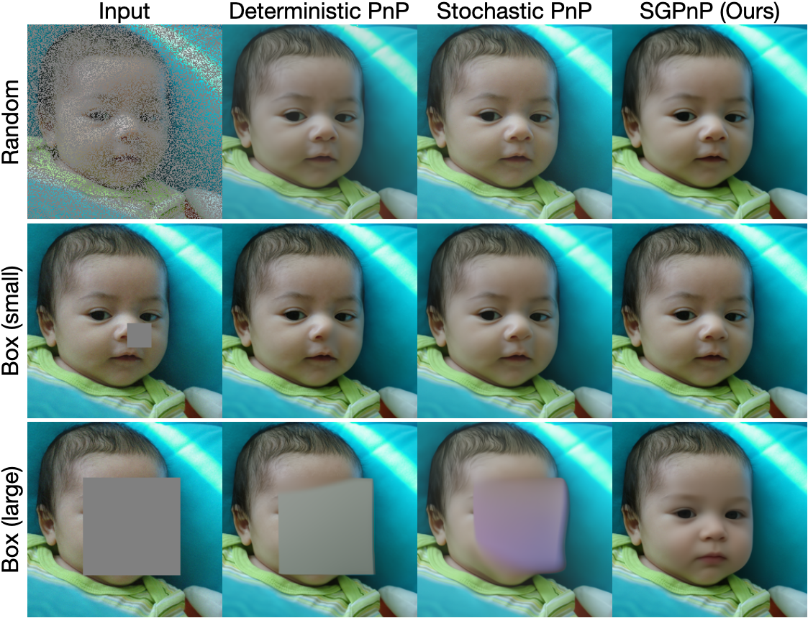
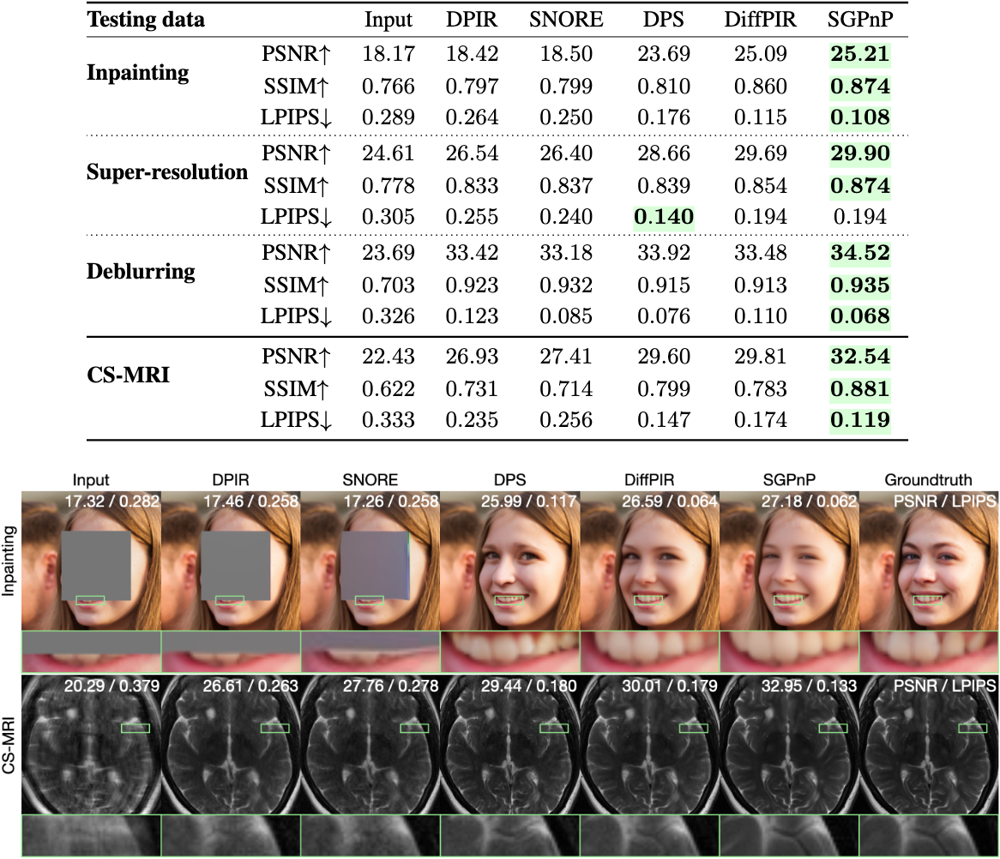
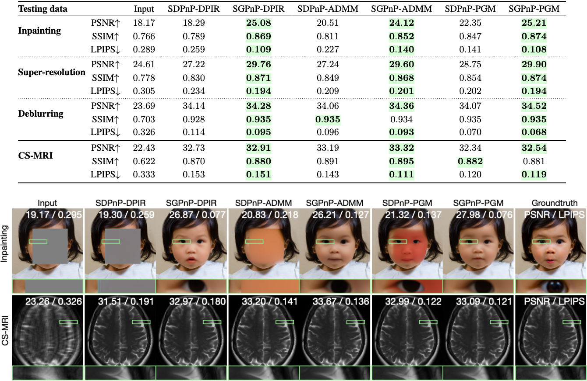

1UW-Madison 2WashU 3Los Alamos National Laboratory
 |
Plug-and-play (PnP) methods are widely used for solving imaging inverse problems by incorporating a denoiser into optimization algorithms. Score-based diffusion models (SBDMs) have recently demonstrated strong generative performance through a denoiser trained across a wide range of noise levels. Despite their shared reliance on denoisers, it remains unclear how to systematically use SBDMs as priors within classical PnP frameworks without relying on the reverse diffusion sampling. In this paper, we establish a score-based interpretation of PnP that justifies using pre-trained SBDMs to be used directly within PnP algorithms. Building on this connection, we introduce a stochastic generative PnP (SGPnP) framework that injects noise to better leverage the expressive generative SBDM priors, improving robustness in severely ill-posed inverse problems. We provide a new theory showing that this noise injection induces optimization on a Gaussian-smoothed objective and promotes escape from strict saddle points. Experiments on challenging inverse tasks, such as multi-coil MRI reconstruction and large-mask natural image inpainting, demonstrate consistent improvement over conventional PnP methods and achieve performance competitive with diffusion-based solvers.
Comparison of our method (SGPnP) with several PnP baselines (DPIR and SNORE) and diffusion-based solvers (DPS and DiffPIR) on FFHQ (inpainting, super-resolution, and deblurring) and fastMRI (compressed sensing MRI). SGPnP consistently outperforms conventional PnP methods and is comparable to diffusion-based solvers.

Comparison between score-based deterministic PnP (SDPnP) and stochastic generative PnP (SGPnP). These methods differ only in whether noise is injected into the denoiser input.

We share implementations of SGPnP-ADMM, SGPnP-DPIR, and SGPnP-PGM for inverse problems including inpainting, super-resolution, deblurring, and compressed sensing MRI.
@article{park2026SGPnP,
title={Stochastic Generative Plug-and-Play Priors},
author={Park, Chicago Y. and Chandler, Edward P. and Hu, Yuyang and McCann, Michael T. and Garcia-Cardona, Cristina and Wohlberg, Brendt and Kamilov, Ulugbek S.},
journal={arXiv:2604.03603},
year={2026}
}